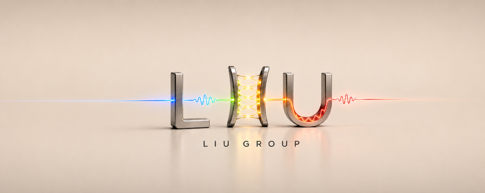

Ultrafast molecular science
Understanding novel material functions under unconventional conditions.
The Liu Group investigates how the chemical and physical properties of materials are reshaped by optical and geometrical confinement, particularly through strong light–matter interactions. We use ultrafast nonlinear spectroscopy as a powerful tool to guide optical cavity engineering and molecular design, ultimately uncovering new ways to control material properties.